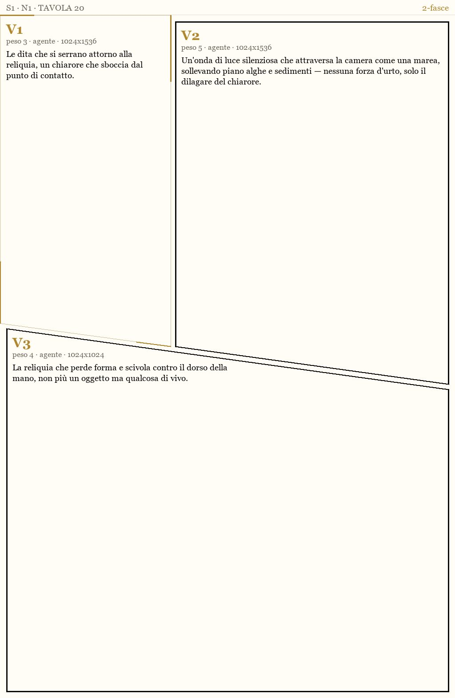
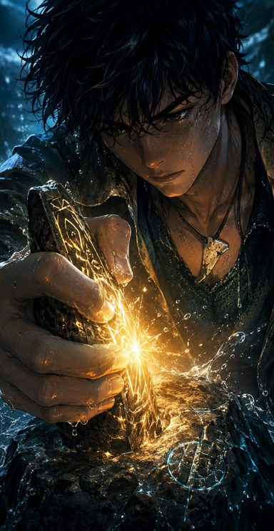
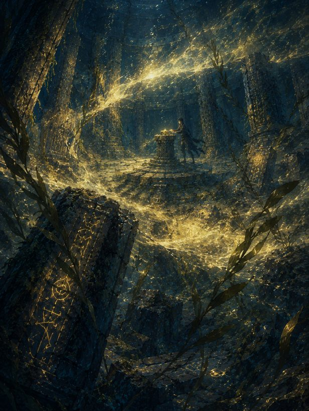
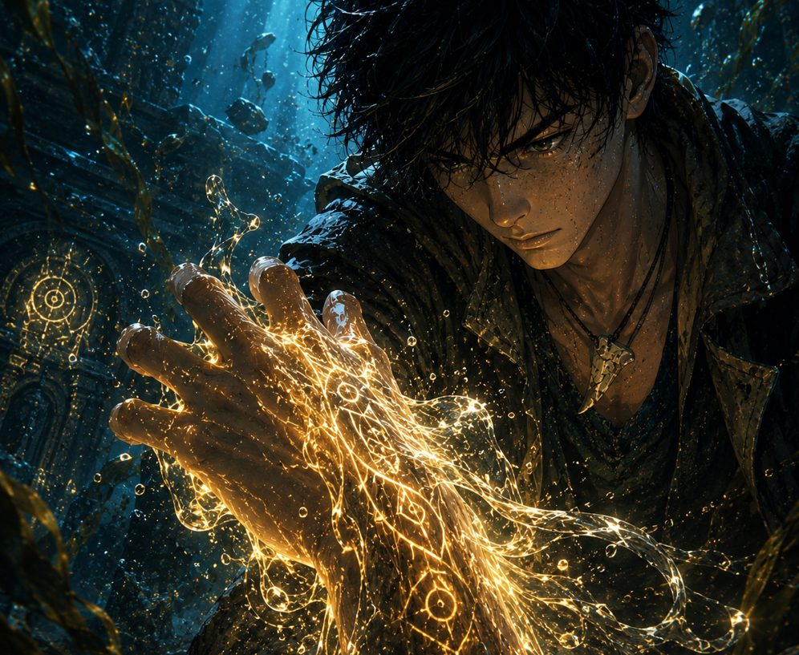
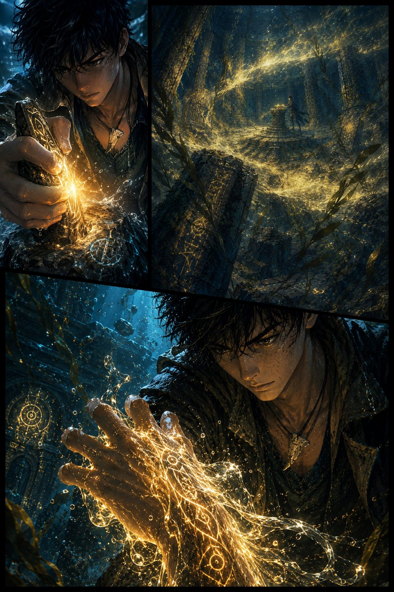
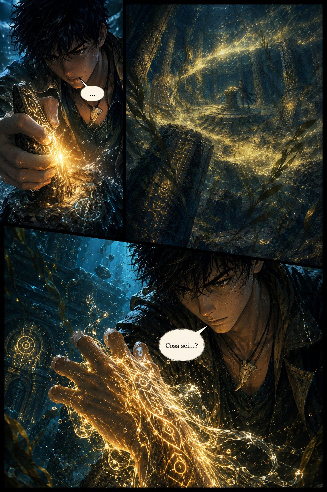

Astralis ha dimenticato.
Cinque Eredi devono ricordare.
Il primo albo è finito.
La campagna si chiude tra
La campagna è conclusa. Grazie a chi c'è stato.
Come nasce una tavola
Una tavola vera del Numero 1, dalla griglia al lettering — con i file di lavorazione, non un disegno esplicativo.
-
1. La griglia
Prima del disegno c'è la geometria: quante vignette, quanto spazio a ciascuna, dove cade l'occhio. È qui che si decide il ritmo della pagina.

-
2. Le vignette
Ogni vignetta nasce da sola, con la sua luce e la sua inquadratura. Solo dopo trova il suo posto nella griglia.



-
3. La tavola
Composte, le vignette diventano una pagina: i margini, le grondaie, il peso dei neri. La tavola comincia a respirare.

-
4. Il lettering
Per ultime arrivano le voci. Balloon, code, didascalie: la pagina è finita e si può leggere.


La Risonanza
Astralis ha costruito tutto sulla memoria. Poi l'ha persa, e oggi non sa più dare un nome a ciò che sta tornando. Le Rune ricominciano a rispondere: glifi che si accendono sott'acqua, sogni che si ripetono uguali in case lontane, Totem che si manifestano a gente comune. Cinque Eredi vengono chiamati; dall'altra parte c'è qualcuno che li osserva da tempo, arriva un passo prima e non uccide: cancella.
L'albo esiste già
«Il Peso del Ritorno» è chiuso: 48 tavole di storia, illustrate e letterate, più copertina e retrocopertina. Il tipografo è scelto, si chiama Pazzini. Quello che manca è la tiratura. La campagna serve a portare in macchina un albo disegnato fino all'ultimo balloon.

La Galleria
La galleria raccoglie quello che è stato svelato finora: tavole del Numero 1, luoghi di Astralis, Guardiani già ratificati nel canone. Il resto è sigillato e si apre un pezzo alla volta, al passo della campagna. Certe pagine è giusto vederle per la prima volta sulla carta.
La campagna è aperta
L'obiettivo è 15.000 € e paga la stampa professionale del Numero 1. Kickstarter è tutto-o-niente: il 16 ottobre alle 13:52 si chiude, e se la cifra non c'è l'albo non va in macchina. I primi 100 sostenitori lo ricevono nella prima ondata di spedizione.
Il Mondo di RuneGuardians
Lasci un indirizzo e nella email di benvenuto trovi l'accesso a un'area riservata del sito: la mappa di Astralis, i Guardiani ratificati con nome, Totem e fazione, i luoghi, le tavole d'evoluzione delle Armature. L'area cresce insieme al fumetto, e chi è in lista la vede per primo. Nella casella non arriva altro: aggiornamenti sulla campagna e sull'albo, disiscrizione in un clic.